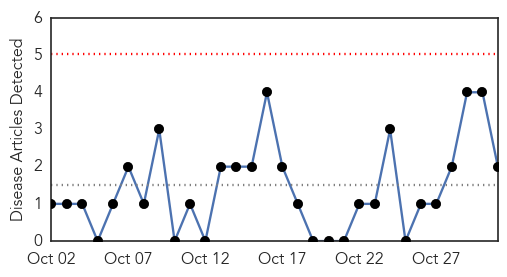
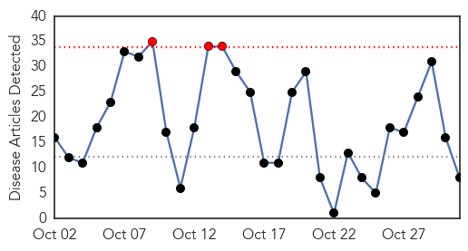

Pertussis
30-Day Web Trend
0 alerts, 0 warnings

30-Day Twitter Trend
Article Locations


Article Confidences

Top Articles:
Top Tweets:
-
No tweets found for Oct 31, 2015
Influenza
30-Day Web Trend
3 alerts, 0 warnings

30-Day Twitter Trend
4 alerts, 0 warnings

Article Locations

Article Confidences
Top Articles:
- 0.997
- What You Need to Know About This Year's Flu Season
- 0.982
- Flu vaccines now available through Humboldt County Department of Health and
- 0.975
- Nasal spray is on the way
- 0.895
- Today's stories from newspapers in Flamborough
- 0.850
- Scientists are working on ways of predicting where the flu will strike next
- 0.825
- Could bananas cure AIDS? New drug made from the fruit can kill hepatitis C and flu
- 0.811
- Evaluation of novel second-generation RSV and influenza rapid tests at the point of care.
- 0.806
- Today's stories from newspapers in Caledon
Top Tweets:
-
No tweets found for Oct 31, 2015